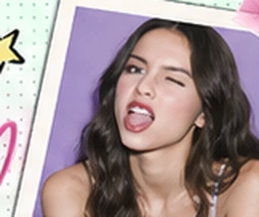
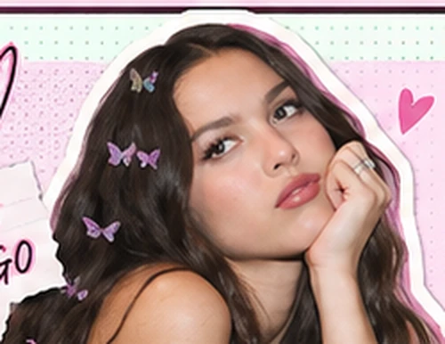

drop dead
Olivia Rodrigo
 CRUSH ALERT! ♡
CRUSH ALERT! ♡♫ TRADUÇÃO EM PORTUGUÊS ♡
a sua revista secreta de som, drama & confissões
✶ TRÊS PÁGINAS · LETRA · BASTIDORES · MENTE ✶

XOXO ♡

Conecte seu Spotify para acompanhar a música atual ♡
CRUSH ALERT! ♡